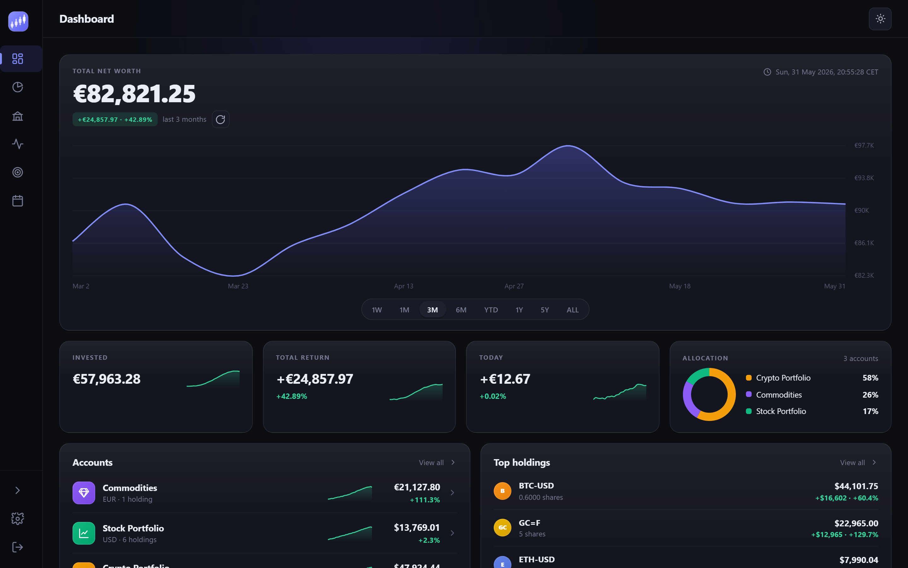
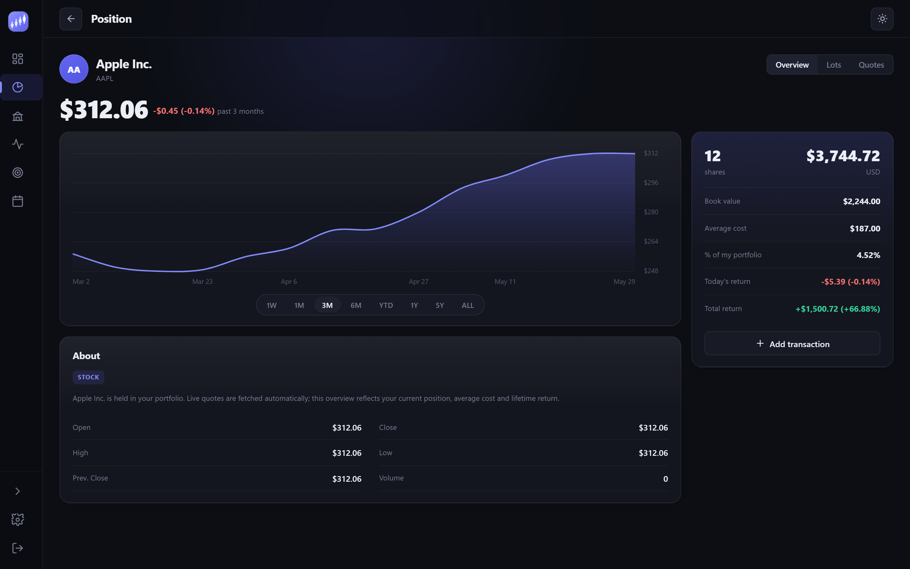
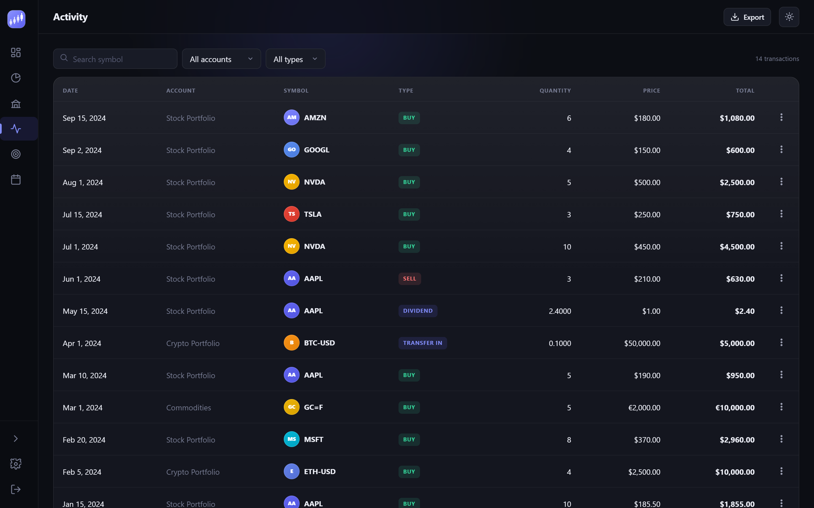
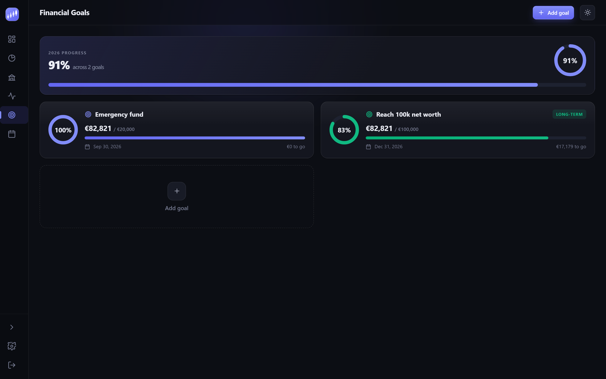

Multi-account portfolio
Group stocks, crypto and commodities into as many accounts as you like and see them roll up into one total-wealth figure.
Capitrack is the open-source wealth tracker you run yourself. Follow your stocks, crypto and commodities across every account, watch real-time performance from Yahoo Finance, and keep every number on your own server.



Track every asset class in one place
No spreadsheets, no logins to ten different brokers. Capitrack pulls it together and keeps it private.
Group stocks, crypto and commodities into as many accounts as you like and see them roll up into one total-wealth figure.
Live quotes fetched automatically from Yahoo Finance, so every holding is valued at the latest market price.
Drop in exports from Revolut or Trezor, or any generic CSV. Capitrack auto-detects the format, maps your transactions and skips duplicates.
Interactive charts, performance metrics and full history let you see how your wealth moves over any time range — portfolio-wide or per symbol.
Set savings targets with live progress bars, and view your trades and daily wealth on a built-in wealth calendar.
Hold assets in different currencies and let Capitrack convert everything with your own rates into a single base currency.
A fast, focused interface that works beautifully in dark or light — whether you check it daily or once a quarter.
Tap a symbol to see its full price history, your average cost, today's return and exactly how much of your portfolio it represents.
A clean ledger of every buy, sell, dividend and transfer — plus financial goals with live progress and a calendar that plots trades and daily wealth.

Capitrack runs as two containers — a .NET API and an nginx-served Blazor app — behind a single docker compose. Clone the repo, bring it up, and your data lives in a local SQLite file on a Docker volume — nowhere else.
admin — on first run a random password is generated and printed to the logs (docker compose logs api). Change it from Settings → Security.
Capitrack never phones home. There are no accounts to sign up for and no third party ever sees your balances — because the only place your data lives is the machine you run it on. The app talks only to Yahoo Finance for prices.
Everything sits in one SQLite file on a Docker volume you control and can back up.
Zero analytics, zero trackers. The app talks only to the Yahoo Finance price feed.
MIT-licensed and auditable. Fork it, extend it, own it.
Spin up your own Capitrack instance in minutes and start tracking everything you own — privately.